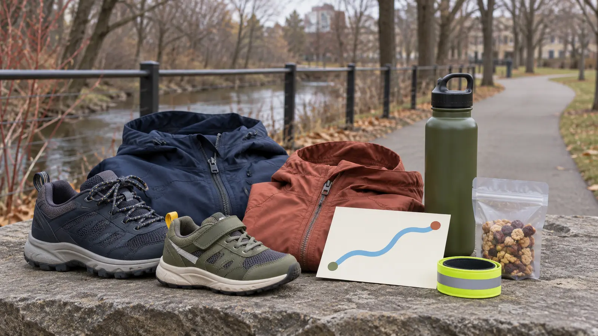

0–10 minutes · arrive
Read every parking sign, photograph the row, open the city map, check the closure feed and identify the first legal crossing. Use the bathroom before arrival because the official feature list does not promise a restroom.
SYRACUSE · ONE-HOUR URBAN WALK · AUTHORITY-EXPANSION
The Creekwalk is 4.8 miles. Your family does not need 4.8 miles. Start at an official Inner Harbor access, walk for 30 minutes, then turn around before the return becomes the hard part.

The official route is 4.8 miles, entirely paved and mostly off-road, with several road crossings. That makes it useful for a flexible family walk—not a promise that every surface, crossing or access point works for every person today. Use Inner Harbor as the start, set a 30-minute outbound alarm, and turn wherever the family is when it rings. The return is the second half of the outing, not an optional add-on.
The city lists access parking at Kirkpatrick Street and Van Rensselaer Street and at 408/412 Spencer Street as the closest choices to Inner Harbor. Parking signs, construction, events and availability control on the day. Do not improvise a roadside spot or block a launch, gate or accessible space. The city says parks are open daily from dawn to dusk; finish with enough light to reload safely.
The city describes the Inner Harbor as a 2.9-acre city-owned park with off-street parking, a waterfront amphitheater and a Creekwalk segment that also connects with the Empire State Trail. It is a trail access point, not a controlled children’s attraction. Expect cyclists, runners, skaters, dogs, water, changing weather and people moving at different speeds.
Before anyone gets out, give two rules: stay on the agreed side of the path, and stop at every road crossing until the adult says the whole group moves. The Creekwalk’s mostly off-road design does not remove its several crossings. If a child cannot reliably stop, choose a fenced playground or the parking-lot transfer plan plus a shorter enclosed activity.
The official trail page does not list admission or a reservation for an ordinary walk. That does not make every parking space, event, festival or nearby attraction free. Read current parking signs and event notices before committing. Set a simple budget: trail only, food packed from home, and no promised paid stop. If the family wants downtown food afterward, choose it separately and verify hours.
Allow 75 minutes door-to-door at the site: ten minutes to park and brief, 50–60 minutes walking, and five minutes to reload. A school-night version is 20 minutes total—walk out for ten and back for ten. Do not turn a local reset into a full downtown itinerary because the map shows more trail.
The city calls the Creekwalk an accessible pathway and lists the facility as accessible. It also says the route has road crossings and occasional flood closures. Wheelchair, stroller and mobility-device users should still verify the chosen parking surface, curb cuts, slope, width, construction, snow or leaf cover and the exact turnaround. Contact Syracuse Parks at the current number on the city page when a feature decides the trip.
A paved surface does not guarantee winter clearing, dry curb ramps, working fountains or an obstruction-free route. Use a companion plan that preserves independence instead of assuming help will be welcome. The family weather cutoff applies before wheels or feet leave the vehicle.
Leave scooters, skates and bikes home on the first family walk. Learn the crossings, passing behavior and turnaround before adding speed.
Rain or high water: if the city closure feed, barriers or conditions say closed, leave. Do not step around a gate or test floodwater. Ice or lake-effect snow: use an indoor plan; generic pavement traction is not permission to enter an unmaintained route. Wind: shorten near exposed water and leave if branches or debris are moving unpredictably.
Low energy: walk ten minutes out and ten back. Child bolts or refuses crossings: return to the vehicle without adding another segment. Bathroom need: end the walk; do not search the full trail for an unverified facility. Rainy-day Syracuse backup: verify current hours and use the MOST two-zone plan rather than stacking both.
Skip when a child cannot stop at road crossings, flooding or ice is possible, daylight is too short, the chosen access or surface is not confirmed for a mobility need, anyone expects a restroom, or the family wants a fenced play space. The Onondaga Lake Park guide may fit a different route need, but its current conditions still require a fresh check.
Reviewed November 4, 2026 using the City of Syracuse’s official Onondaga Creekwalk page, map, parking list, closure route, features, hours and contact details and its Inner Harbor page. The 30-minute turnaround, one-hour card and family rules are independent editorial planning—not a live trail report, access certification or city itinerary. No affiliate links are attached.
MAKE THE WEEK COUNT
Build the plan your family can finish well, then leave enough energy for the next part of the day.
More family plans